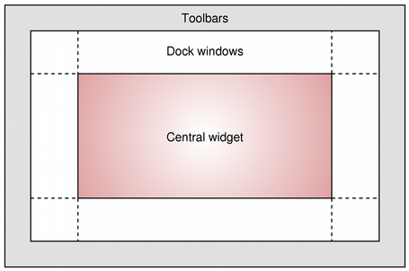

qviz visualizing a map context.
qviz is a highly customizable visualizer based on Qt, it is similar to the ROS visualizer tool rviz. However, benefit from Svar solving dynamic objects, the qviz of GSLAM is more easier to use, more light-weighted and ready for extend.
Get started to customize qviz:
Panels of qviz
qviz allows users to extend their own panels. All you need to do is to implement a QWidget, regist it with macro 'GSLAM_REGISTER_PANEL', and compile it to a shared library with name qviz_<name>.
Here below is a sample panel source code to show topic lists:
#include <QWidget>
#include <QListWidget>
#include <QDockWidget>
#include <QTableWidget>
#include <QHeaderView>
#include <GSLAM/core/GSLAM.h>
class PanelPubsub : QDockWidget
{
public:
PanelPubsub(QWidget* parent,Svar config):QDockWidget(parent){
setObjectName("Messenger Topics");
setProperty("area","right");
table=new QTableWidget(this);
setWidget(table);
table->setColumnCount(3);
table->setHorizontalHeaderLabels({"Name","Type","PayLoad"});
QHeaderView *HorzHdr = table->horizontalHeader();
#if QT_VERSION>=0x050000
HorzHdr->setSectionResizeMode(QHeaderView::Stretch);
HorzHdr->setSectionResizeMode(0, QHeaderView::ResizeToContents);
#else
HorzHdr->setResizeMode(QHeaderView::Stretch);
#endif
data["newSub"]=messenger.subscribe("messenger/newsub",[this](Subscriber sub){
this->updateTable();
});
data["newPub"]=messenger.subscribe("messenger/newpub",[this](Publisher pub){
this->updateTable();
});
updateTable();
}
QTableWidgetItem* setValue(int row,int col,QString val)
{
if(table->item(row,col)!=NULL)
{
table->item(row,col)->setText(val);
return table->item(row,col);
}
else
{
QTableWidgetItem* item=new QTableWidgetItem();
item->setText(val);
table->setItem(row,col,item);
return item;
}
}
void updateTable()
{
std::vector<std::array<std::string,3>> pubsubs;
for(Publisher pub:messenger.getPublishers()){
pubsubs.push_back({pub.getTopic(),"Publisher",pub.getTypeName()});
}
for(Subscriber pub:messenger.getSubscribers()){
pubsubs.push_back({pub.getTopic(),"Subscriber",pub.getTypeName()});
}
if(table->rowCount()!=pubsubs.size())
{
table->setRowCount(pubsubs.size());
int i=0;
for(auto it:pubsubs)
{
setValue(i,0,it[0].c_str())->setFlags(Qt::ItemIsEditable);
setValue(i,1,it[1].c_str())->setFlags(Qt::ItemIsEditable);
setValue(i,2,it[2].c_str())->setFlags(Qt::ItemIsEditable);
i++;
}
}
else{
for(int i=0;i<table->rowCount();i++)
{
for(int j=0;j<3;j++)
table->item(i,j)->setText(pubsubs[i][j].c_str());
}
}
update();
}
QTableWidget* table;
Svar data;
};
GSLAM_REGISTER_PANEL(pubsub,GSLAM::PanelPubsub);
}
It should be noted that by define the property of QObject, the panel can be putted to "left","right","top","bottom" dock areas or "center" tab areas.
setObjectName("Messenger Topics");
setProperty("area","right");

Users are able to remote qviz in all areas including menu, toolbar, docks and displays
Add an action in toolbar via Messenger
Users are able to register a tool buttom dynamicly by using Messenger and Svar, here is a demo:
Svar sayHelloBotton={
{"name","Say Hello"}
{"icon","hello.png"},
{"callback",SvarFunction([](){
LOG(INFO)<<"Hello world.";
})}
};
messenger.publish("qviz/add_tool",sayHelloBotton);
Instead of using a callback, users can also regist a topic so that when the action is triggered, a bool message will be published throw that topic.
Svar sayHelloBotton={
{"name","Say Hello"}
{"icon","hello.png"},
{"topic","hello_clicked"}
};
messenger.publish("qviz/add_tool",sayHelloBotton);
Add Menu with Messenger
When we have a group of actions to add, we can also add a menu:
Svar sayHelloBotton1={
{"name","Say Hello1"}
{"icon","hello.png"},
{"topic","hello1_clicked"}
};
Svar sayHelloBotton2={
{"name","Say Hello2"}
{"icon","hello.png"},
{"topic","hello2_clicked"}
};
Svar sayHelloBotton3={
{"name","Say Hello3"}
{"icon","hello.png"},
{"topic","hello3_clicked"}
};
Svar menuHellos={{"name","Hellos"},{"icon","hellos.png"}};
Svar childMenu={{"name","Child Menu"},{"icon","hellos.png"},
{"actions",{sayHelloBotton1}}};
menuHellos["children"]=Svar::array({childMenu});
menuHellos["actions"]=Svar::array({sayHelloBotton2,sayHelloBotton3});
messenger.publish("qviz/add_menu",menuHellos);
Implement your own display
Similar to rviz, qviz also provides an interface to support your own visualization, this functional is implemented in the default panel "panel_displays". The displays panel uses a tree widget to visualize and interact any Svar context.
To learn the usage, please see the source code of display plugin mapviz.

 1.8.11
1.8.11